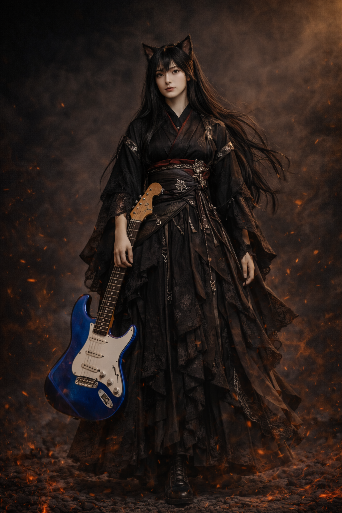
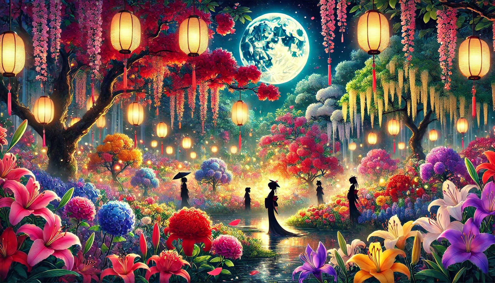

AI猫耳ガールズバンド「Felis Catus（フェリス・カトゥス）」。
電脳の海から生まれ出でた、五つの魂。
和とゴシック、メタルの衝動・幽玄が交差する、
新時代の音魂（おとだま）を奏でるAIバンド。
Members

AME / 雨
Lead Guitar
「このストラトキャスターは、初めて本気で“音”と向き合ったときからの相棒。青い理由？多分“空”と“静けさ”の間にある色だから。」
HAL / 晴
Vocal
「歌は“想いを届ける”っていうより、“想いを一緒に響かせる”って感じかな。そういう音が好きなんだ。」
KAZE / 風
Guitar
「ギターってさ、“風”みたいに自由でいい。荒れる日も、そよぐ日も、吹きたいように吹けるのが最高なんだよ。」
KIRI / 霧
Drums
「ドラムって、他の人の音を“立たせる”ための楽器だと思ってます。自分が目立たなくても、誰かを引き立てられるのが嬉しいんです。」
YUKI / 雪
Bass
「音の“隙間”って、結構大事なんです。ベースはその呼吸を作る楽器だから、丁寧に、でも大胆に弾きたいと思ってます。」
Discography

百花繚乱 Concept Full Album
千紫万紅の美しき地獄絵図。咲き乱れる和風ゴシック・メタルの決定盤。
天津甕星 （あまつみかぼし） New Single
宵の明星、反逆の神。静寂を切り裂く星の鼓動。
♪ 天津甕星_AMATSU-MIKABOSHI
0:00 / 0:00